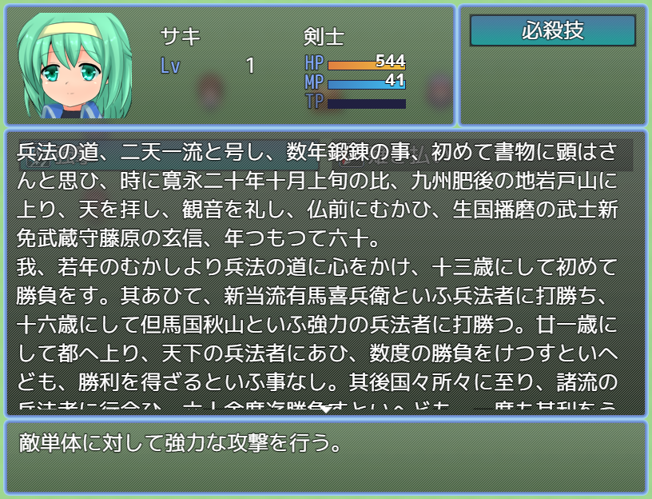
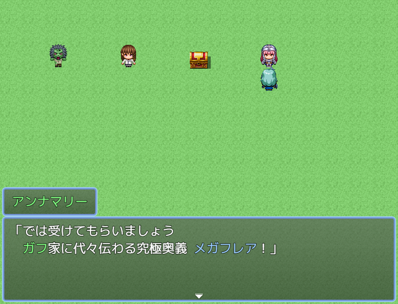

スキルの詳細説明文を表示する
概要スキルに詳細説明文を設定して表示します。スキル一覧画面でカーソルを合わせて特定のキーを押すことで、詳細説明を表示します。 使用例 長い文字列を自動で改行するには ウィンドウ幅を超える日本語を自動で折り返す をご利用ください。 ダウンロードリンクGitHub(MZ版)GitHub(MV版)Rawボタンを右クリックして対象をファイルに保存してください。 前提プラグインMZ版の本プラグインを利用するためには、下記プラグインが必要です。 DarkPlasma_CustomKeyHandler 関連プラグイン スキルの詳細説明文表示切り替えボタンプラグイン
Read more
指定した語句に自動で色をつける
概要指定した語句に自動的に色をつけます。 使用例 スキル名やアイテム名についてもハイライトの対象とすることができます。 ダウンロードリンクGitHub(MZ版)GitHub(MV版)Rawボタンを右クリックして対象をファイルに保存してください。
Read more
ウィンドウ幅を超える日本語を自動で折り返す
概要ウィンドウ幅を超えるような日本語を自動で改行します。 使用例 意図せず改行される場合本プラグインを導入すると、他プラグインによって追加されたウィンドウでも自動改行され、意図しない改行が発生する可能性があります。その場合は、対象プラグインのウィンドウクラス名を自動改行無効ウィンドウ設定に追加してください。 よく問題になるプラグインとクラス名 プラグイン名 バージョン（※） ウィンドウクラス名 通知メッセージプラグイン - 鳥小屋 1.3.0 Window_NotifyMessage （※）筆者が確認したバージョン。 ダウンロードリンクGitHub(MZ版)GitHub(MV版)Rawボタンを右クリックして対象をファイルに保存してください。
Read more